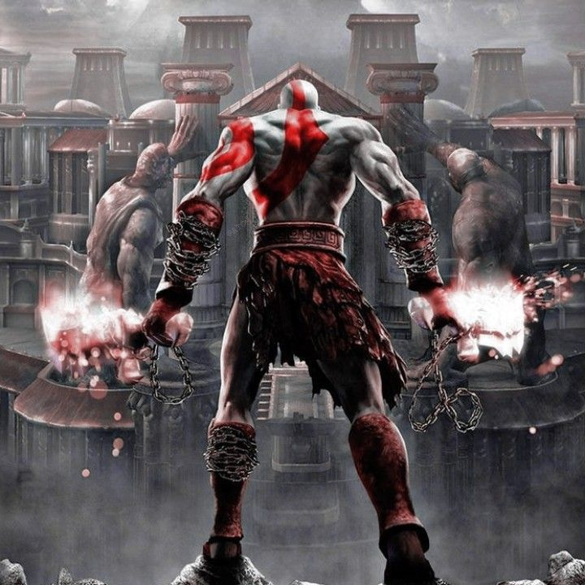
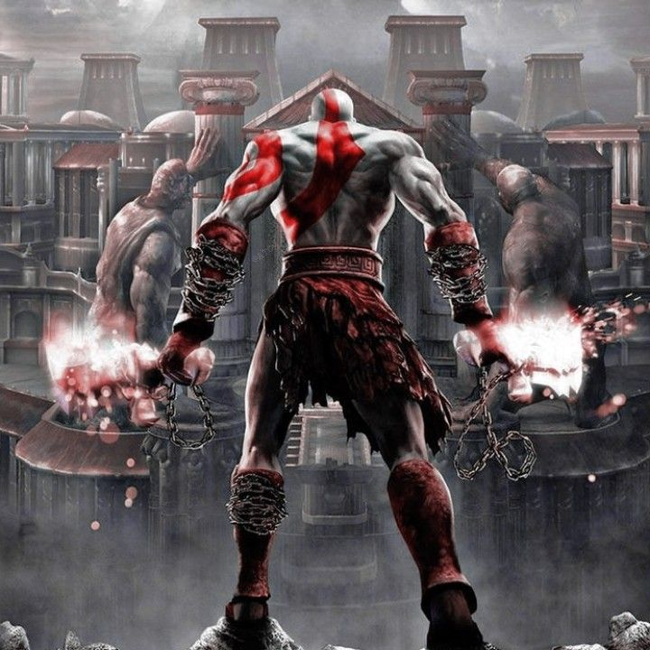

ARES
.png)
a personificação da fúria e
do conflito brutal
a personificação da fúria e
do conflito brutal
Ares é uma das figuras mais marcantes e controversas da mitologia grega. Filho de Zeus, o rei dos deuses, e de Hera, a rainha do Olimpo, Ares representa o aspecto mais brutal
violento e caótico da guerra. Enquanto outros deuses ligados à guerra, como Atena, simbolizavam a estratégia, a justiça e a inteligência militar, Ares era a personificação da
fúria, da destruição e da sede de sangue que surgem nos campos de batalha.


Fisicamente, Ares é descrito como um deus extremamente forte, atlético, jovem e vigoroso. Sua presença nas batalhas era temida tanto
por mortais
quanto por outros deuses.
Ele carregava consigo armas típicas de guerra, como lanças, escudos e armaduras brilhantes. O animal que o
representa é o cão e o javali.Na mitologia romana, Ares é conhecido como Marte, que era muito mais respeitado em Roma do que na Grécia.
Marte era considerado um protetor do Império e patrono dos soldados
Os próprios gregos antigos não o veneravam com tanto fervor quanto outros deuses. Em Atenas, por exemplo, Ares era pouco adorado,
e sua figura era vista com certa repulsa. No entanto, em regiões como Esparta, onde a cultura militar era exaltada,
Ares tinha um respeito maior. Ares lutou ao lado dos troianos,hegou a ser ferido por Diomedes, com a ajuda da deusa Atena.
Gritou tão alto de dor que, segundo a Ilíada, ecoou como 10 mil homens gritando juntos.
Ares é considerado o pai das Amazonas, as guerreiras lendárias. Sua união com a ninfa Harmonia teria dado
origem a essas mulheres ferozes,
que viviam sem homens e treinavam desde crianças para a guerra.
Nas esculturas gregas Ares era retratado como uma figura heroica
mesmo que sua natureza seja bruta e violenta

No alto do Monte Olimpo, morada dos deuses, nasceu Ares, fruto da união entre Zeus,
o soberano do céu e senhor dos trovões, e Hera, a poderosa e orgulhosa rainha dos deuses.
Desde o início, Ares demonstrou ser uma criança inquieta, impulsiva e de temperamento forte.
Enquanto outros deuses buscavam sabedoria, artes ou justiça, Ares cresceu
fascinado pelo som das espadas se chocando, pelo cheiro de sangue e pelo grito
dos guerreiros no campo de batalha.
Desde jovem, Ares percorreu os campos do mundo mortal, caminhando por entre os exércitos em marcha.
Onde ele passava, o medo se espalhava. Os soldados sentiam uma energia
desconhecida invadindo seus corpos: suas mãos tremiam, seus corações batiam descompassados,
e muitos perdiam a razão, entregando-se à carnificina
Mas Ares não era apenas temido por mortais. No próprio Olimpo, sua presença causava desconforto.
Os deuses o viam como impulsivo, imprudente e muitas vezes descontrolado.
Um dos episódios mais humilhantes da vida de Ares aconteceu quando se envolveu com Afrodite,
a deusa do amor e da beleza. Mesmo sabendo que ela era esposa de Hefesto, o deus ferreiro
Ares não resistiu à paixão. Os dois se encontravam secretamente, mas Hefesto, desconfiado,
preparou uma armadilha: forjou uma rede invisível e inquebrável, que os capturou em pleno ato de amor.
Chamados por Hefesto, os outros deuses vieram testemunhar a cena, e Ares, cheio de vergonha, fugiu
apressadamente, jurando vingança.
Outra historia bastante intrigante sobre o deus ares foi quando ares tentou impedir os gigantes gêmeos
Otos e Efialtes de invadir o Olimpo, porem eles o capturaram e o prenderam em um jarro de bronze por 13 meses
até Hermes vir libertá-lo mostrande que, apesar de ser o deus da guerra ele não era invencivel.

5 indicações sobre musicas, filmes e jogos que se relacionam com o deus grego ares.

 

Ana Clara Macedo Gomes estudante do 1° ano de Informatica
no IFSP Campus Guarulhos


Deixe aqui a sua opinião sobre o site